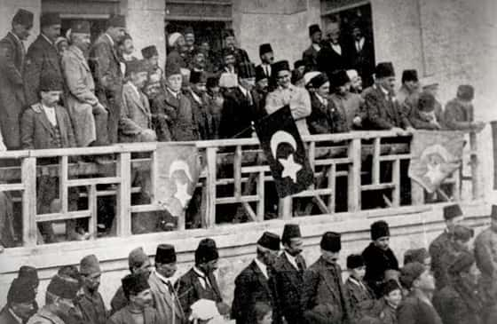

O güne kadar direniş adına yaptıklarım ve aldığım eğitim civarda bilindiği için Rize Müdafaa-i Hukuk Cemiyeti’ne benden söz edilmiş, memleketim Lazistan sancağından Ankara’ya gidecek beş mebusun arasına adım yazılmıştı. Gözümü kırpmadan babamın evini yakmış, insanların pencerelerinden bakmaya korktuğu günlerde, sokakta işgalci avına çıkmıştım. Bütün bunlar adımın duyulmasını sağlamıştı. Bana bakınca gerçek bir bağımsızlık savaşçısı görüyor olmalılardı ki yaşımın sadece yirmi olduğunu unutmuşlardı. Çünkü bahsettikleri mebusluk için en az otuz olmalıydım. “Sorun değil” dediler. “Yaşını büyütürüz.” Gerçekten de dediklerini yaptılar. Doğum yılımı 1890 diye kaydedip, beni Ankara’ya gönderdiler. On yaş! Bana kalırsa yüz yaş büyütmelilerdi! Çünkü kendimi hepsinden yaşlı hissediyordum. Oturduğu yerden parasıyla mühimmat dağıtan cemiyetçilerden en az yirmi leş daha tecrübeliydim.
Yıllar sonra babamla memleketime gidip oralarda neler döndüğünü çözmeye çalıştım. Rize, Trabzon, Samsun, Ordu, Giresun, her yeri dolaştım. İçlerinden sefalet ve savaş geçen köylerin hepsinde bir gece uyumadan Ankara’ya gitmeyecektim. Ve öyle de yaptım. Eğer bir mebus olacaksam, haklarını savunacağım insanları tanımalıydım...
Ankara’ya vardığımda gördüklerim beni yanıltmamıştı. Birkaç zeki adamın çevresine toplanmış bir sürü cahil, parlamenter taklidi yapıyordu. Parlamenter gibi giyinip, parlamenter gibi konuşmaya çalışıyorlardı. Hepsinin her şey hakkında bir fikri vardı. Sadece kitaplarda fotoğraflarını gördükleri bağımsız meclislerin mebusları gibi davranmaya çalışıyor ama Grosz’un karikatürlerinden daha ciddi durmuyorlardı. Herkes oradaydı. İmamlar, şeyhler, İttihatçılar, her nasılsa Avrupa’daki eğitimlerini birkaç hafta önce tamamlayıp, tek bir mermi atmadan Ankara’ya kapağı atabilmiş züppeler, İstanbul’daki Mebusan Meclisi’nden kaçıp gelenler, savaşın tozunu yutup dumanını içmiş subaylar, ustura zekâlı entelektüeller... Bir siyasi kimlik festivali!
Meclis binasının bahçesinde kol kola volta atıyor, göz ucuyla Mustafa Kemal’e bakıyorlardı. Her ne kadar saltanat İstanbul’da bir semt kadar kalmışsa da, aralarında hâlâ tebaadan kopamamış, kendisine çoban arayan koyunlar vardı. Peki buranın sultanı kim, der gibi, önünde eğilecek adam peşindeydiler. Bağımsızlığın akılda başladığını öğrenmek için en az on kez ölüp on bir kez dirilmeleri gerekiyordu. Ancak askerleri anlayabiliyordum. Onların bakışlarındaki hayranlık insaniydi. Büyük bir savaşçıya duyulan saygıydı...
Yıllar önce fotoğrafına heyecanlanarak baktığım adamsa hepsinden farklıydı. Onun bağımsızlığı doğuştandı. Özgürlüğünü kazanmamış, geri almıştı. Hem de sadece İstanbul hükümetinden değil, bütün dünyadan. Dünyanın bütün ordularından. O gün, meclis bahçesinde, gerçekten özgür olan tek insan oydu. Çünkü ben bile birinin kölesiydim. Kendimin.
Tanışmak için sabırsızlanıyordum. Uzatılan elleri, sahiplerinin yüzlerine bakmadan sıktığımı ve aralarından geçip ona doğru yürüdüğümü hatırlıyorum. Kahve içiyordu. Bahçenin bir köşesinde oturuyor, her ne düşünüyorsa onu yerde görüyordu. Dalmıştı. İki yanında duranlar kendi aralarında fısıldaşıyor, daha açılmamış bir mecliste kulis yapıyorlardı. Birkaç adım uzağında durup bağırdığımı hatırlıyorum. Bağırarak ve yanındakileri sıçratarak kendimi tanıttığımı.
“Ziya Hurşit, Paşam. Lazistan sancağı mebuslarından Ziya Hurşit. Emrinizdeyim.”
Daldığı yerden öyle bir soğukkanlılıkla çıktı ki, onu asla şaşırtamayacağımı o an anladım. Yıllar sonra, “Senden bunu beklemezdim” derken bile sükunetini korumuş ve ben bu tanışma anımızı hatırlamıştım.
“Demek o meşhur Ziya Hurşit sizsiniz. Pek de gençmişsiniz. Ankara’ya hoş geldiniz.”
İşte böyle başladı. Her şey böyle başladı. Kahramanımla böyle tanıştım. Emrinde olduğumu söyleyerek. Aniden. Bağırarak. Yirmi yaşında...
Dört dilde yazıp okuyabildiğimi öğrendiği an beni çağırtmış ve tanıştığımız günün akşamında çalışmaya başlamıştık. Meclisteki reis odasında onlarca sayfa yazı yazdık. Sabaha karşı ayrılıp, bir sonraki gün devam ettik. Sonra bir gün daha ve bir gün daha. İçtüzük üzerinde çalışıyorduk. Farklı meclislerin çalışma usullerine ilişkin Fransızca, İngilizce, Almanca metinleri tercüme etmemi istiyordu. Karaoğlan meydanına yakın bir otelde oda tutmuştum. Sadece uyumak için. Onun dışında günlerim ve gecelerim tamamen mecliste geçiyordu.
Bir gece, çalışmaktan gözlerimizin kızardığı bir anda, “Dinlenelim” dedi. Belki de ilk kez, gerçekten, o zaman konuştuk. Karşısına gelene kadar, hayatım boyunca neler yaptığımı anlatmamı istedi. Ecce Homo hariç, hemen hemen her şeyi anlattım. Özellikle de babamı şahsen kurtaramadığım için ne kadar kızgın olduğumu. “Anlayabiliyorum” dedi. Evet asker, öyle demişti.
“Seni anlayabiliyorum.”
O anı tarif etmek zor. Böylesine delice bir şeyi anlayabilen bir insanla karşı karşıyaydım. Beni anlayabilen biriyle. Üstelik bir hafta öncesine kadar tanışmıyorduk bile. Hakkımda sadece anlattıklarımı ve anlatılanları biliyordu. Yanılmamıştım. Karşımda oturan adam benim dostumdu. Benzerimdi. Kızgınlığın ne olduğunu biliyordu. Pire için değil yorganı, bütün evi yakmanın ve asla pişman olmamanın ne anlama geldiğini biliyordu. Bunu gözlerinde görüyordum...
Meclisin açılışı için öngördüğü tarih 22 Nisan’dı. Bir Perşembe. Ama çevresindeki cahiller sürüsü, her hamlesine şüpheyle yaklaşan ümmetçilerin alınacağından korkuyordu. Şeriatın elden gideceği endişesiyle uyuyamayanlar, “cuma olmalı” diyorlardı.
“Mübarek bir cuma günü açılmalı milletin meclisi!”
Gülüyordum tabii. Politikayla tanışıyordum. Onun da gülüp geçeceğini sanıyordum. Ama öyle yapmadı. Israrları dikkate alıp, “Peki” dedi. Belki de bu yüzden o Mustafa Kemal’di. Gelmiş geçmiş en yüksek analitik zekâya sahip olduğu için. Benim gibi romantik bir zekâya sahip olmadığı için Mustafa Kemal’di. Ama ona, çok derinlerde bir yerde kızdığımı hatırlıyorum. Kararını değiştirdiği için. Her neyse, sonuçta beklenen cuma geldi.
Ankaralılar binayı kuşatmış, içinde “Hakimiyet Milletindir” yazan meclislerine koşmuşlardı. Tarihin, ardına bakmadan değiştiği bir andı. Meclis balkonundaydık. İnsanları izliyorduk. Karşımızda öyle bir kalabalık vardı ki, birkaç dakikalığına da olsa hepimiz eşit hissettik. Birbirimizle ve dünyanın bütün insanlarıyla eşit. Birkaç dakikalığına da olsa, insanlığın yükselebileceği en üst noktaya vardığımızı hissettik: Özgürlük dağının zirvesine. Birkaç dakikalığına da olsa her şeyi unutup güldüm. Hayatım boyunca belki de insanlığımdan gurur duyduğum tek andı. Ne öldürdüklerimi, ne içimdeki parçalanmayı ne de Yonina’yı düşünüyordum. Mustafa Kemal yanımda duruyor ve kalabalığın ateşiyle ısınıyordu. Kim bilir, neler hissediyordu? Kim bilir, o insanlara bakarken neler görüyordu? Uğruna kendinden vazgeçtiği Anadolu halkının coşkusuyla büyülenmiş, yüzlerindeki umudu izliyordu. O birkaç dakika boyunca, umut, güneşten daha parlaktı, asker. Daha sıcak. Dokunup hissedecek kadar gerçek. Çünkü durmuştu hayat. O andan başka zaman yoktu. Ne öncesi ne sonrası. Bense gülüyordum. Kollarımı kavuşturmuş, duran dünyaya bakıyordum. Çevremdekiler siyahlar içindeyken, krem rengi takımımla umudu soluyordum. Bunun bir tesadüf olmadığını öğrenmem uzun sürmedi. O meclisteki hiç kimseyle aynı rengi taşımadığımı içine girince anladım.
